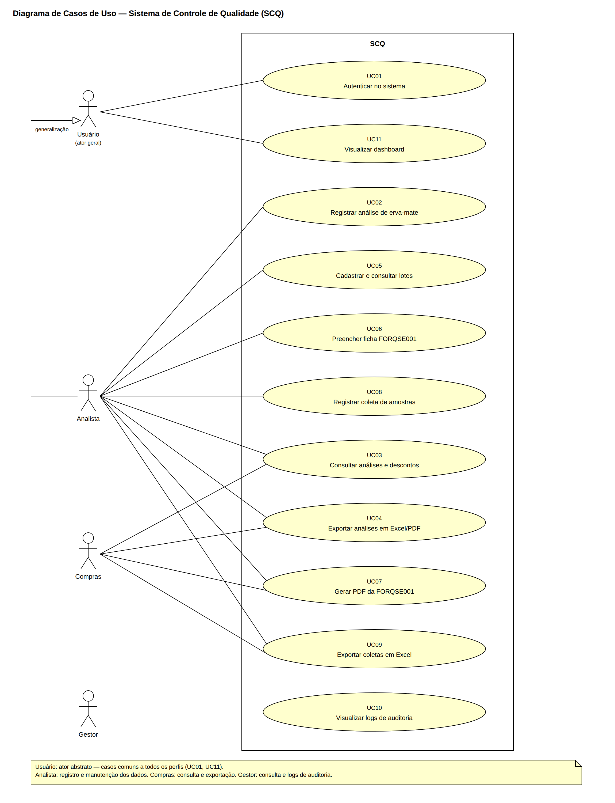
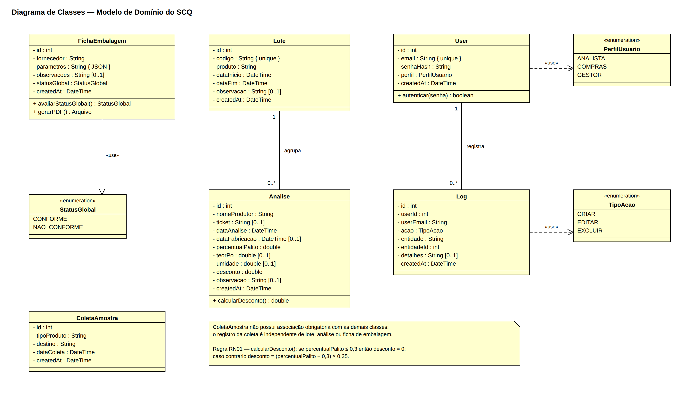
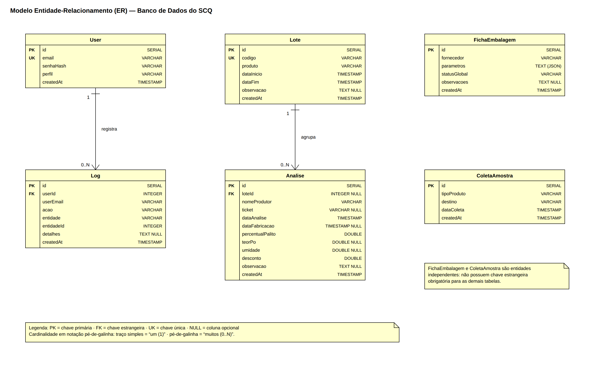
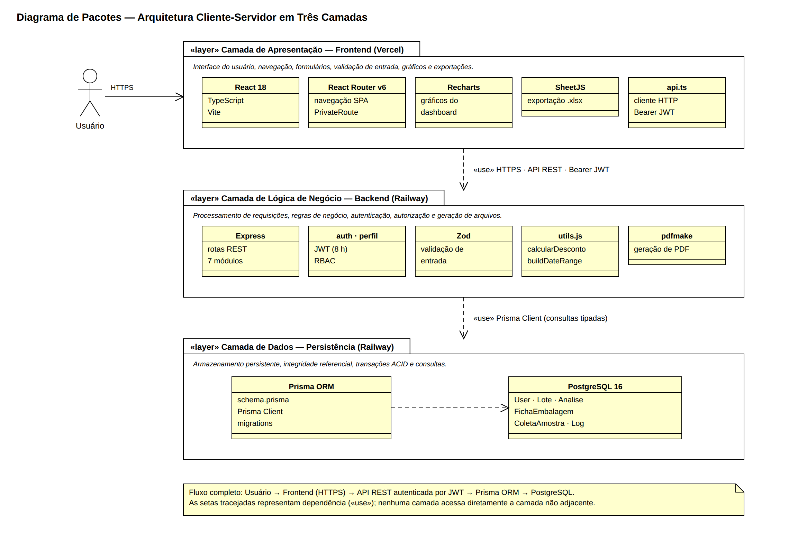

SCQ — Indústria Ervateira Verdelândia LTDA
O que foi construído e por quê
A Indústria Ervateira Verdelândia LTDA controlava a qualidade da erva-mate recebida por meio de planilhas eletrônicas: o teor de palito de cada carga, as fichas de liberação de embalagens e as coletas de amostra viviam em arquivos separados, sem histórico confiável e sem controle de quem alterava o quê. O desconto pago ao produtor por excesso de palito dependia de uma fórmula mantida à mão na planilha.
O SCQ substitui esse conjunto de planilhas por uma aplicação web única, hospedada em nuvem e acessível de qualquer computador da fábrica. O cálculo do desconto passou a ser feito pelo servidor a cada análise registrada, a partir da regra oficial da empresa, e toda alteração fica registrada com autor, data e hora.
O software em produção e o repositório com o código final
Código-fonte completo do frontend e do backend, com o histórico de commits de todo o desenvolvimento e o deploy automático configurado.
Repositório principalAplicação publicada e operacional, com banco de dados PostgreSQL em nuvem e deploy automático a cada versão nova.
Aplicação webRequisitos, arquitetura, manuais e material de apoio
Documento único subdividido em Especificação de Requisitos, Arquitetura e Design, Manual do Usuário, Manual Técnico e Plano de Implantação.
PDFMaterial de consulta rápida para o dia a dia dos usuários do sistema.
PDFApresentação utilizada na capacitação dos funcionários da entidade.
PDFProcesso de publicação em produção, desafios encontrados, testes pós-implantação e recomendações à entidade.
PDFComprovação do sistema em funcionamento no ambiente de produção.
PDFDocumento de concepção do produto, com o problema, o escopo e a proposta de solução.
PDFRelação das histórias de usuário, critérios de aceite e priorização.
PDFAjustes solicitados pela entidade durante a fase de validação com usuários reais.
PDFDiagramas UML produzidos no Astah




Resumo de cada ciclo, com os principais resultados e aprendizados
13 de abril de 2026 · 11 story points entregues
Autenticação por e-mail e senha, cadastro de produtor e cadastro de análise, sobre uma API em Node.js e Express. Todas as histórias planejadas foram concluídas e validadas manualmente contra os critérios de aceite.
Aprendizado: escrever os critérios de aceite antes de codificar reduziu discussões e retrabalho já no primeiro ciclo.
Relatório completo (PDF)4 de maio de 2026 · 16 story points planejados, 6 concluídos
Ficha FORQSE001 com parâmetros de conformidade, consulta paginada de fichas e registro de coletas de amostra. Migração da persistência para Prisma com SQLite, autenticação JWT com perfis e os primeiros testes automatizados, sobre a regra de cálculo do desconto.
Aprendizado: a estimativa do ciclo furou — duas das quatro histórias ficaram parciais. Em compensação, testes automatizados sobre regras de negócio puras mostraram-se baratos de escrever e de alto valor.
Relatório completo (PDF)23 de maio de 2026
Integração completa entre a interface React e a API, publicação em produção na Vercel e no Railway com PostgreSQL, geração do PDF da ficha FORQSE001, exportação em Excel, módulo de lotes, logs de auditoria e tema claro/escuro. Restrição de CORS e cabeçalhos de segurança HTTP.
Aprendizado: hospedar backend e banco no mesmo provedor eliminou problemas de rede, e os logs de deploy foram decisivos para diagnosticar falhas que não apareciam no ambiente local.
Relatório completo (PDF)24 de agosto de 2026 · semanas 19 e 20
Publicação definitiva em produção, configuração do deploy automático e capacitação dos usuários da entidade. A conferência do sistema contra a planilha oficial de fechamento levou à correção do limite de isenção da regra de desconto por teor de palito.
Aprendizado: confrontar o sistema com os dados reais da entidade revelou divergências que nenhum teste sintético teria encontrado.
Relatório completo (PDF)Setembro de 2026 · semana 21
Gestão de usuários com permissão por aba, troca da própria senha, exportação em Excel em todos os módulos e importação do histórico que estava em planilha: 1.414 análises e 37 lotes. A conferência registro a registro durante a migração revelou que a fórmula de desconto da planilha havia deixado de ser calculada a partir de maio de 2026, deixando 98 cargas sem o desconto devido.
Aprendizado: migrar dados reais é também auditá-los — o valor entregue à entidade não veio só do software, mas do que a migração expôs.
Documentos de encerramento do projeto
Slides da apresentação de encerramento, com o problema, a solução, o impacto na entidade, as tecnologias e as lições aprendidas.
PDF · PPTX abaixoDocumento formal que registra a entrega do software e da documentação à entidade beneficiada.
PDF · DOCX abaixoArquivos editáveis: Apresentação (PPTX) · Termo de Entrega (DOCX)